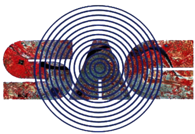

Software Defined Radio(SDR) Payload Commanding User Inteface
Home
About
Services
Contact
×
Home
About
Services
Contact
☰ Menu
This is About Page
Resize the browser:
On small screens → Slide-in vertical menu with ☰ button
On big screens → Horizontal top navigation